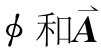
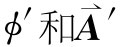
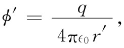
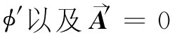

虽然变换规律已隐含在上述内容中，但现在还是把它写下来，它用一个静止参考系中的 给出运动参考系中的 。由于Aμ =（ϕ，A）是一个四维矢量，所以这些变换式看来几乎像式（25.1）一样，只是t应以ϕ代，而x则用A代。于是，
这里假定带撇的坐标系是以速率v沿正x方向运动，而这速率则是在不带撇的坐标系中测得的。
图25-2 参照系S′以速度v（沿x方向）相对于S系运动。在S′系中原点的一个静止电荷在S系中处于x=vt的地方。P点的势可以在两个参照系的任一个中算出来
我们要来讨论四维势概念用途的一个例子。以速率v沿x轴运动的电荷q，其矢势和标势是什么呢？这一问题在随电荷运动的坐标系中很简单，因为在这个系统中电荷是静止的。让我们假设，这电荷位于S′参照系的原点，如图25-2所示。于是在这个系统中的标势为
 （25.25）
式中r′是从q至场点的距离，即在运动系统中所测到的。当然，矢势A′为零。
现在去求在静止坐标系中的测得的势ϕ和A是直截了当的。式（25.24）的逆变换关系为
利用由式（25.25）所给出的 ，可得
这向我们提供了在S系中可能观察到的标势ϕ，但可惜是，这是用S′的坐标表示的。还可以利用式（25.1），将t′，x′，y′和z′的各式代入得到用t，x，y，z表示出来的式子。我们得
对于A的各个分量，按照相同的手续，你可以证明
A=vϕ. （25.28）
这些都是在第21章中用别的方法推导出来的相同公式。